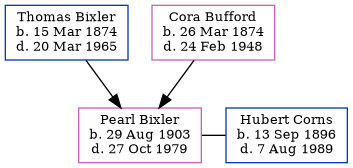

Louis Edward Bixler 1901 - 1986
[ Home ] | [ Calendar ] | [ Surnames Index ] | [ Census Index ] | [ Family History ]The 4th of 12 children of Thomas Bixler (a farmer) and Cora Bufford, Louis Bixler, the fourth cousin twice-removed on the mother's side of Nigel Horne, was born in Fort Wayne, Allen, Indiana, USA on Feb 26, 19011,2,3 and. He married Ethel Douglas (with whom he had 2 surviving children Florence E and Robert E) in Owen, Indiana, USA on Jul 16, 19232.
During his life, he was living in Washington, Indiana on Apr 21, 19105; in Clay, Indiana on Feb 9, 19204; and in Marion, Indiana on Apr 1, 19306.
He died on Nov 12, 1986 in Reelsville, Putnam, Indiana1,3.
Parents
- Thomas Isaac was born on Mar 15, 1874
- Cora Pearl was born on Mar 26, 1874
Citations
- Social Security Death Index - Findmypast
- United States Marriages - Findmypast
- United States Obituary Notices - Findmypast
- US Census 1920 - Findmypast (was age 19 and the son of the head of the household)
- US Census 1910 - Findmypast (was age 9 and the son of the head of the household)
- US Census 1930 - Findmypast (was age 29 and the head of the household)
Media
Social Security Death Index - USBMD/SSDI/307144070
United States Obituary Notices - US/TRIB/035060963
United States Marriages - R_75596763
United States Marriages - FS/MAR/33743707/1
United States Marriages - R_75596763/1
US Census 1930 - USC/1930/004950638/00108/014
Family Tree
Generated by ged2site. Last updated on Jun 11, 2024